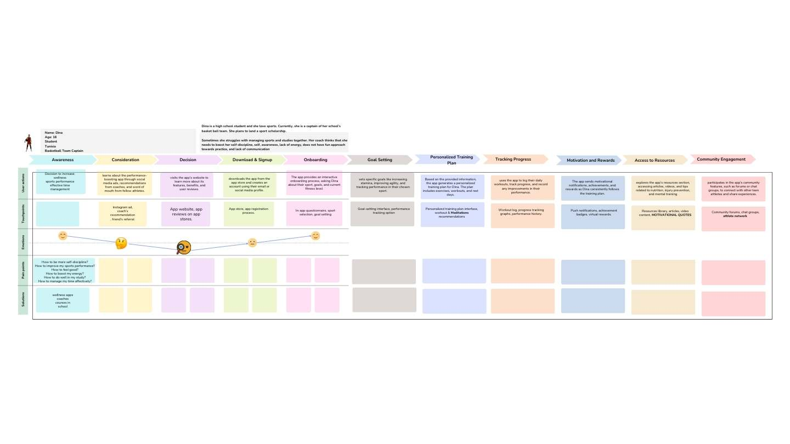

Competitive Analysis & Journey Mapping for a Youth Athlete Performance App
Helping Boosters understand the athletes they're building for
Boosters, a startup building a performance-boosting app for young athletes, approached me to learn more about their prospective users, run a competitive analysis, and design the user journey mapping for their MVP.

By conducting a study involving surveys and interviews, I gathered insights into the preferences and concerns of prospective users and identified the significant challenges young athletes face. I then analyzed competitors in the wellness space to find ways to make Boosters stand out, and used those findings to design the user journey for the MVP and recommend features that would set it apart.
Understanding the product vision
Boosters' own team had already done some early research with athletes and were working from two starting assumptions: users are 13–23 years old, and primarily interested in improving performance. Before starting UXR, I spent time understanding the pressures young athletes face — balancing performance, studies, and social and peer pressure. As a psychologist with a background in sports psychology, I already had a working understanding of the wellness challenges athletes face around performance, which shaped the research plan.
Competitive analysis
Benchmark direct competitors and identify what makes a wellness app stand out.
Field interviews
Talk to athletes directly about their day-to-day challenges and pressures.
Opportunity mapping
Ask what solutions athletes already use to boost performance and manage wellness, and how they balance sport, study, and family time.
Competitive landscape & field interviews
To understand the competitive landscape, I benchmarked "Champion's Mind" and "Mindset" — the two apps Boosters identified as their closest competitors. Both had strong user retention on the app stores, so I focused on understanding their retention and engagement strategies and their value proposition. I also reviewed athlete wellness communities, app store feedback, and blog coverage of both competitors to surface pain points and design opportunities.
What competitors do well
- Onboarding that sets up a strong first-time experience
- Daily encouragement notifications
- Gamification — streaks and achievement awards
- Encouragement after completing a task
- Community engagement and in-app feedback
Field interviews
I recruited 4 athletes for in-depth interviews focused on their day-to-day pressures, the solutions they already use to boost performance and wellness, and how they balance sport, study, social life, and family time.
Mapping the athlete's journey
Drawing on the research, I mapped the user journey for the MVP. Journey mapping made it possible to visualize how athletes would actually move through the product, and to surface pain points and opportunities for improvement before a single screen was built.

Recommendations & impact
- Personalization — AI-driven training plans that adapt to progress and feedback.
- Gamification — interactive challenges, leaderboards, and rewards to sustain motivation.
- Real-time feedback — in-the-moment feedback during exercises to optimize performance.
- Social integration — letting users connect, share, and compete with friends for a sense of community.
- A clean interface — intuitive, easy to navigate, built for varying user preferences.
This track of agile UXR left Boosters a strong legacy: a research-backed playbook the team could build their MVP on.